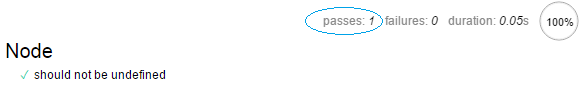
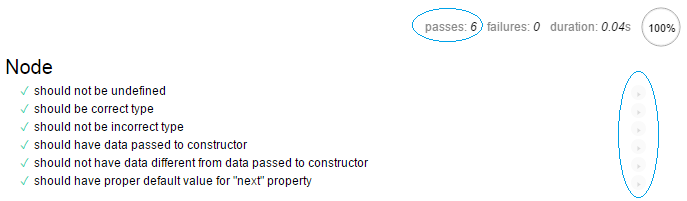
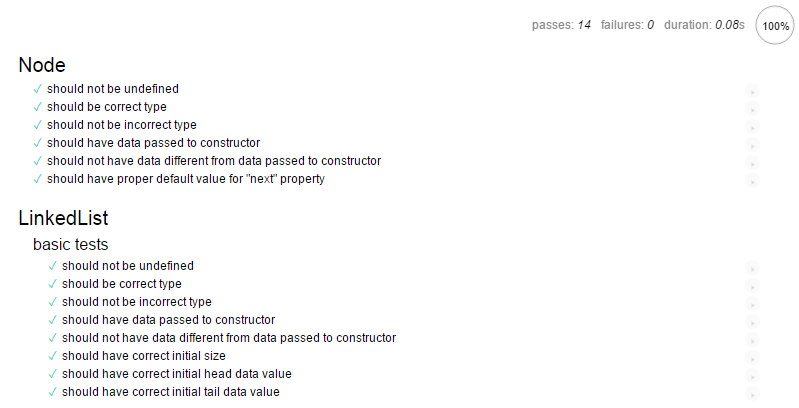
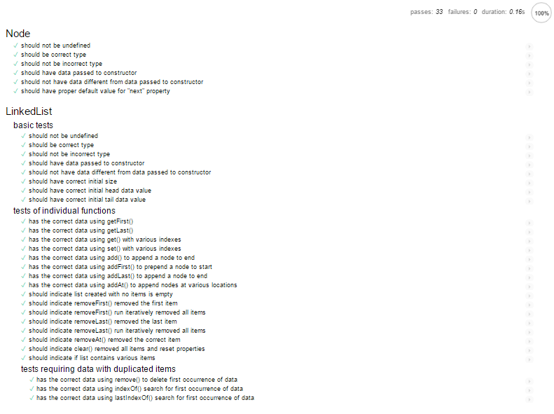

There are many frameworks for testing your JavaScript, but in this quick tutorial the focus will be on Mocha and Chai.
Mocha is a simple JavaScript testing framework where tests can be run in Node.js or in the browser. In this tutorial tests will run in the browser.
Chai is an assertion library, necessary in this case because Mocha does not come with its own assertions. If you don't know what assertions are don't worry, we'll see them in a bit.
Mocha is great for TDD (Test Driven Development) and BDD (Behavior Driven Development), which are two completely different concepts, but both are wildly popular.
Test-driven development (TDD) is a software development process that emphasizes repetition of a very short development cycle, where requirements are first turned into very specific test cases, and then the software is modified to pass the new tests.
Behavior-driven development (BDD) is very closely related to TDD. It is testing by describing behavior as it appears to an outside observer.
Very abstract but don't worry, all will become clear very soon.
To start out, create a directory, perhaps named "tests", where we will be putting everything needed for this tutorial.
Then inside that directory create three files named mocha.js, mocha.css, and chai.js, that contain the code from these three links:
Then in that same directory create a file named linkedlist.js. This is the code we will be testing, and it can be copied from here (it is the solution for the Paragonica linked list programming challenge).
Also create an empty file test_linkedlist.js. That's where we will be writing our tests soon.
Now create a file index.html in that same directory with this content:
<!DOCTYPE html>
<html>
<head>
<link rel="stylesheet" href="mocha.css">
</head>
<body>
<div id="mocha"></div>
<script src="mocha.js"></script>
<script src="chai.js"></script>
<script>mocha.setup('bdd')</script>
<script src="linkedlist.js"></script>
<script src="test_linkedlist.js"></script>
<script>
mocha.run();
</script>
</body>
</html>
This line sets up Mocha:
<script>mocha.setup('bdd')</script>
This code actually runs the tests we will write:
<script>
mocha.run();
</script>
Open that index.html in a browser. You should get no console errors, and not much else as we have not written any tests yet. You will likely see the following in the upper-right corner of the browser window, telling you zero tests passed, zero tests failed, and the duration of the tests.
passes: 0 failures: 0 duration: 0s
Great. We're almost ready to create some tests, but first take a quick look at the code we will be testing, in linkedlist.js.
linkedlist.js contains the code for two JavaScript "classes", Node and LinkedList. Most of our tests will be for the functions in the LinkedList class. Those functions allow you to do things like add items to the list, remove items from the list, add first, add last, etc.
Okay, time to start writing some tests! In our test file test_linkedlist.js, enter the following at the top of the file:
var expect = chai.expect;
I'm going to quickly mention a few Mocha/Chai concepts, and then we'll see them in action, which will make their use and purpose much more clear.
In Mocha tests, the Chai expect() function is used with chainable getters such as .to.be, .to.not.be, .to.have, etc. to construct Chai assertions that allows us to state the "expected" result of running our code.
Related individual tests are organized into groups using Mocha describe() function calls.
The Mocha function beforeEach() is used to specify test setup executed before each test in a describe, ensuring a clean test environment for each test.
The Mocha it() function is used to define an individual test.
describe() function calls can be nested, for further organization of tests into groups. These nested describe() calls can have their own beforeEach() calls for setup specific to the tests in that describe() block. And the beforeEach() calls in each nested describe() are additive, so the setup performed by a beforeEach() in an outer describe() call is still relevant in an inner describe() call.
Though we won't use them in the tests in this tutorial, Mocha also has the following functions (and others):
- before() - runs before all tests in this describe() block
- after() - runs after all tests in this describe() block
- afterEach() - runs after each test in this describe() block
Wow, lots of info real quick, but no worries, now we'll dive in and write some tests.
Testing the Node class
As previously mentioned, Mocha/Chai tests are organized into describe() blocks as it() function calls, with beforeEach() function calls performing setup before each test, and with expect() and chainable getters serving as assertions.
Add a describe() to hold a few tests of the Node class:
describe ('Node', function () {
const testDataOne = "10";
const testDataTwo = "20";
let node, temp, index, len;
});
The describe() function call takes two parameters. The first is a string that Mocha will display in test output to identify the tests being run in this describe() block. I've just included the name of the class we're testing, Node, but you could out anything here, 'Tests of the Node class', whatever.
The second parameter to describe() is an anonymous function that will contain our beforeEach() for setup and it() calls for the tests. We won't be using afterEach(), etc. but they would go here as well, before the actual tests.
Notice the two const for test data that won't change, and several variables that will change in each test. I'm using ES6 syntax but you could also use the var keyword instead.
Next add a beforeEach() to initialize the variables that will change inside each test:
describe ('Node', function () {
...
beforeEach (function () {
node = new Node(testDataOne);
temp = null;
index = null;
len = null;
});
});
Because the node variable is being set to a new Node instance before each test, our tests won't interfere with each other.
Refresh the browser and notice nothing has changed, because the describe() does not contain any actual tests yet.
passes: 0 failures: 0 duration: 0s
To perform the first test of the Node class, an it() function call is added to the anonymous function passed to describe().
it ('should not be undefined', function () {
expect(node).to.not.be.undefined;
});
That was easy. This first test is really simple. The it() function call also takes two parameters, serving similar functions as with describe().
The first parameter is a string that Mocha will display in test output to identify what the test does. Notice how this code reads: 'it should not be undefined'. The function call it() and the first string parameter form a natural sentence describing what the test expects of the code.
The second parameter to it() is an anonymous function executing an assertion formed using the Chai expect() function call and the chained getters 'to', 'not', 'be', and 'undefined'.
Once again the expect() and the getters form a natural sentence describing what the test expects of the code 'expect node to not be undefined'.
Run the tests by refreshing the browser and the result of this first test of the Node class is displayed:

The output shows one test passed, no tests failed, and the test took .05 seconds to execute.
Here is the complete describe() code for all the tests of the Node class:
describe ('Node', function () {
const testDataOne = "10";
const testDataTwo = "20";
let node, temp, index, len;
beforeEach (function () {
node = new Node(testDataOne);
temp = null;
index = null;
len = null;
});
it ('should not be undefined', function () {
expect(node).to.not.be.undefined;
});
it ('should be correct type', function () {
expect(node instanceof Node).to.be.true;
});
it ('should not be incorrect type', function () {
expect(node instanceof LinkedList).to.be.false;
});
it ('should have data passed to constructor', function () {
expect(node.data).to.equal(testDataOne);
});
it ('should not have data different from data passed to constructor', function () {
expect(node.data).to.not.equal(testDataTwo);
});
it ('should have proper default value for "next" property', function () {
expect(node.next).to.be.null;
});
});
Examine this code carefully, particularly the strings describing each test, and the assertions formed by the expect() and the getters.
Some of these tests of the Node class are probably unnecessary but they are included to illustrate the kinds of tests you might create in Mocha/Chai.
Notice that the expect() function call is passed the data being tested:
- node - the instance of the Node class, created in beforeEach()
- node.data - the 'data' property of the Node instance
- node.next - the 'next' property of the Node instance
Notice also how the expect() and getters form somewhat natural descriptions of what is being tested:
- expect node to not be undefined
- expect node instanceof Node to be true
- expect node instanceof LinkedList to be false
- expect node data to equal testDataOne
- expect node data to not equal testDataTwo
- expect node next to be null
Refresh the browser and we are in developer nirvana:

The output shows all six tests passed, no tests failed, and the tests took .04 seconds to execute (funny that is took less time than for one test).
Notice the clickable arrows on the right edge of the browser window for each test. Clicking them runs only that test, and the test URL changes to use the "grep" query parameter, so only tests that match a specific pattern are run.
http://localhost:8080/test4tutorial/test_linkedlist.html?grep=Node%20should%20not%20be%20undefined
Such URLs could be bookmarked if desired to run specific tests.
Testing the LinkedList class
Add another describe() after the end of the describe() testing the Node class to contain tests of the LinkedList class:
describe ('LinkedList', function () {
const testArrayOne = [ "Utah", "Maine", "Virginia", "South Carolina", "Hawaii", "Michigan", "Kansas", "North Dakota", "Iowa", "Oregon", "Arkansas", "Connecticut", "Florida", "Rhode Island", "Nevada", "Montana", "West Virginia", "Georgia", "Alaska", "Tennessee", "California", "Idaho", "Kentucky", "Maryland", "Missouri", "New Mexico", "Ohio", "Wisconsin", "Illinois", "Mississippi", "Delaware", "New York", "North Carolina", "Colorado", "Wyoming", "Texas", "Washington", "New Hampshire", "Louisiana", "South Dakota", "Alabama", "Vermont", "Pennsylvania", "Arizona", "Massachusetts", "New Jersey", "Oklahoma", "Indiana", "Minnesota", "Nebraska" ];
const testArrayOneStr = "[Utah, Maine, Virginia, South Carolina, Hawaii, Michigan, Kansas, North Dakota, Iowa, Oregon, Arkansas, Connecticut, Florida, Rhode Island, Nevada, Montana, West Virginia, Georgia, Alaska, Tennessee, California, Idaho, Kentucky, Maryland, Missouri, New Mexico, Ohio, Wisconsin, Illinois, Mississippi, Delaware, New York, North Carolina, Colorado, Wyoming, Texas, Washington, New Hampshire, Louisiana, South Dakota, Alabama, Vermont, Pennsylvania, Arizona, Massachusetts, New Jersey, Oklahoma, Indiana, Minnesota, Nebraska]";
const testArrayTwo = [ "one", "two", "three", "one", "four", "five", "two", "three", "five" ];
const testArrayTwoStr = "[one, two, three, one, four, five, two, three, five]";
let linkedList, len;
beforeEach (function () {
linkedList = new LinkedList(testArrayOne);
len = linkedList.size;
});
});
testArrayOne is an array of test data that will populate instances of the LinkedList class for individual tests.
testArrayOneStr is a string representation of the test data used to test the LinkedList class toString() function.
testArrayTwo and testArrayTwoStr will be used to verify the LinkedList instances do not have the wrong test data.
linkedList will be an instance of the LinkedList class, recreated before each test.
len represents the number of items in the LinkedList instance, set in beforeEach() using the size property of LinkedList.
With LinkedList test setup done, the actual tests start with an embedded describe() to organize our tests into groups:
describe ('basic tests', function () {
it ('should not be undefined', function () {
expect(linkedList).to.not.be.undefined;
});
it ('should be correct type', function () {
expect(linkedList instanceof LinkedList).to.be.true;
});
it ('should not be incorrect type', function () {
expect(linkedList instanceof Node).to.be.false;
});
it ('should have data passed to constructor', function () {
expect(linkedList.toString()).to.equal(testArrayOneStr);
});
it ('should not have data different from data passed to constructor', function () {
expect(linkedList.toString()).to.not.equal(testArrayTwoStr);
});
it ('should have correct initial size', function () {
expect(linkedList.size).to.equal(50);
});
it ('should have correct initial head data value', function () {
expect(linkedList.head.data).to.equal('Utah');
});
it ('should have correct initial tail data value', function () {
expect(linkedList.tail.data).to.equal('Nebraska');
});
});
This embedded describe() contains some basic tests of the LinkedList class, as indicated by the first parameter string.
The anonymous function parameter to this describe() could start with test setup such as a beforeEach(), but for these basic tests it is unnecessary. The beforeEach() of the outer describe() is also run for each of these tests.
Examine these basic tests, their it() string parameters, and the expect()/getter assertions.
As with the Node class some basic checks that the linkedList instance is defined and is of the correct type are performed.
There are additional checks that the instance has the correct data, that is does not have the incorrect data, that the number of items in the list is correct considering the input data, and that the data for the head and tail (first and last items) is correct.
These tests illustrate how features of the LinkedList class are used and their functionality verified.
Refreshing the browser executes the Node tests and also these new tests:

Fourteen tests passed, six for the Node class and eight tests for the LinkedList class. No tests failed, and the tests took .08 seconds to execute on my machine.
What is follows is the entire code for the tests of the Node and LinkedList classes. There are additional describe() blocks grouping tests. There are additional beforeEach() blocks performing specialized setup for their describe() block tests. There are likely some tests that seem unnecessary, and you can probably think of some tests that could and should be added to more fully test these classes.
But this is a good start, and you should be ready to start writing your own tests, and to examine the Mocha and Chai documentation to explore other features, enabling you to write more comprehensive test suites for your code base.
Mocha and Chai are only two of the many testing frameworks out there. Over time you should examine and play around with others. Many share similar features, such as describe(), it(), expect(), getters, assertions, etc. In the end your goal is to create tests that lead to better code, and code that is easier to maintain and extend.
var expect = chai.expect;
describe ('Node', function () {
const testDataOne = "10";
const testDataTwo = "20";
let node, temp, index, len;
beforeEach (function () {
node = new Node(testDataOne);
temp = null;
index = null;
len = null;
});
it ('should not be undefined', function () {
expect(node).to.not.be.undefined;
});
it ('should be correct type', function () {
expect(node instanceof Node).to.be.true;
});
it ('should not be incorrect type', function () {
expect(node instanceof LinkedList).to.be.false;
});
it ('should have data passed to constructor', function () {
expect(node.data).to.equal(testDataOne);
});
it ('should not have data different from data passed to constructor', function () {
expect(node.data).to.not.equal(testDataTwo);
});
it ('should have proper default value for "next" property', function () {
expect(node.next).to.be.null;
});
});
describe ('LinkedList', function () {
const testArrayOne = [ "Utah", "Maine", "Virginia", "South Carolina", "Hawaii", "Michigan", "Kansas", "North Dakota", "Iowa", "Oregon", "Arkansas", "Connecticut", "Florida", "Rhode Island", "Nevada", "Montana", "West Virginia", "Georgia", "Alaska", "Tennessee", "California", "Idaho", "Kentucky", "Maryland", "Missouri", "New Mexico", "Ohio", "Wisconsin", "Illinois", "Mississippi", "Delaware", "New York", "North Carolina", "Colorado", "Wyoming", "Texas", "Washington", "New Hampshire", "Louisiana", "South Dakota", "Alabama", "Vermont", "Pennsylvania", "Arizona", "Massachusetts", "New Jersey", "Oklahoma", "Indiana", "Minnesota", "Nebraska" ];
const testArrayOneStr = "[Utah, Maine, Virginia, South Carolina, Hawaii, Michigan, Kansas, North Dakota, Iowa, Oregon, Arkansas, Connecticut, Florida, Rhode Island, Nevada, Montana, West Virginia, Georgia, Alaska, Tennessee, California, Idaho, Kentucky, Maryland, Missouri, New Mexico, Ohio, Wisconsin, Illinois, Mississippi, Delaware, New York, North Carolina, Colorado, Wyoming, Texas, Washington, New Hampshire, Louisiana, South Dakota, Alabama, Vermont, Pennsylvania, Arizona, Massachusetts, New Jersey, Oklahoma, Indiana, Minnesota, Nebraska]";
const testArrayTwo = [ "one", "two", "three", "one", "four", "five", "two", "three", "five" ];
const testArrayTwoStr = "[one, two, three, one, four, five, two, three, five]";
let linkedList, len;
beforeEach (function () {
linkedList = new LinkedList(testArrayOne);
len = linkedList.size;
});
describe ('basic tests', function () {
it ('should not be undefined', function () {
expect(linkedList).to.not.be.undefined;
});
it ('should be correct type', function () {
expect(linkedList instanceof LinkedList).to.be.true;
});
it ('should not be incorrect type', function () {
expect(linkedList instanceof Node).to.be.false;
});
it ('should have data passed to constructor', function () {
expect(linkedList.toString()).to.equal(testArrayOneStr);
});
it ('should not have data different from data passed to constructor', function () {
expect(linkedList.toString()).to.not.equal(testArrayTwoStr);
});
it ('should have correct initial size', function () {
expect(linkedList.size).to.equal(50);
});
it ('should have correct initial head data value', function () {
expect(linkedList.head.data).to.equal('Utah');
});
it ('should have correct initial tail data value', function () {
expect(linkedList.tail.data).to.equal('Nebraska');
});
});
describe ('tests of individual functions', function () {
it ('has the correct data using getFirst()', function () {
expect(linkedList.getFirst()).to.equal('Utah');
});
it ('has the correct data using getLast()', function () {
expect(linkedList.getLast()).to.equal('Nebraska');
});
it ('has the correct data using get() with various indexes', function () {
// positive test cases
expect(linkedList.get(0)).to.equal('Utah');
expect(linkedList.get(1)).to.equal('Maine');
expect(linkedList.get(linkedList.size - 1)).to.equal('Nebraska');
expect(linkedList.get(linkedList.size - 2)).to.equal('Minnesota');
expect(linkedList.get(24)).to.equal('Missouri');
// negative test cases
expect(linkedList.get(0)).to.not.equal('One');
expect(linkedList.get(1)).to.not.equal('For');
expect(linkedList.get(linkedList.size - 1)).to.not.equal('The');
expect(linkedList.get(linkedList.size - 2)).to.not.equal('Money');
expect(linkedList.get(24)).to.not.equal('And');
expect(linkedList.get(-10)).to.be.undefined;
expect(linkedList.get(100)).to.be.undefined;
});
it ('has the correct data using set() with various indexes', function () {
// set data for test cases
linkedList.set(0, 'hatU');
linkedList.set(1, 'eniaM');
linkedList.set(linkedList.size - 1, 'aksarbeN');
linkedList.set(linkedList.size - 2, 'atosenniM');
linkedList.set(24, 'iruossiM');
// positive test cases
expect(linkedList.get(0)).to.equal('hatU');
expect(linkedList.get(1)).to.equal('eniaM');
expect(linkedList.get(linkedList.size - 1)).to.equal('aksarbeN');
expect(linkedList.get(linkedList.size - 2)).to.equal('atosenniM');
expect(linkedList.get(24)).to.equal('iruossiM');
// negative test cases
expect(linkedList.get(0)).to.not.equal('Utah');
expect(linkedList.get(1)).to.not.equal('Maine');
expect(linkedList.get(linkedList.size - 1)).to.not.equal('Nebraska');
expect(linkedList.get(linkedList.size - 2)).to.not.equal('Minnesota');
expect(linkedList.get(24)).to.not.equal('Missouri');
temp = linkedList.set(-10, 'hatU');
expect(temp).to.be.undefined;
temp = linkedList.set(100, 'hatU');
expect(temp).to.be.undefined;
linkedList.set(24);
expect(linkedList.get(24)).to.be.undefined;
});
it ('has the correct data using add() to append a node to end', function () {
linkedList.add('District of Columbia');
expect(linkedList.get(linkedList.size - 1)).to.equal('District of Columbia');
expect(linkedList.get(linkedList.size - 1)).to.not.equal('Nebraska');
expect(linkedList.tail.data).to.equal('District of Columbia');
expect(linkedList.tail.next).to.be.null;
});
it ('has the correct data using addFirst() to prepend a node to start', function () {
linkedList.addFirst('Guam');
expect(linkedList.get(0)).to.equal('Guam');
expect(linkedList.get(0)).to.not.equal('Utah');
expect(linkedList.get(1)).to.equal('Utah');
expect(linkedList.head.data).to.equal('Guam');
expect(linkedList.head.next.data).to.equal('Utah');
});
it ('has the correct data using addLast() to append a node to end', function () {
linkedList.addLast('Puerto Rico');
expect(linkedList.get(linkedList.size - 1)).to.equal('Puerto Rico');
expect(linkedList.get(linkedList.size - 1)).to.not.equal('Nebraska');
expect(linkedList.get(linkedList.size - 2)).to.equal('Nebraska');
expect(linkedList.tail.data).to.equal('Puerto Rico');
expect(linkedList.tail.next).to.be.null;
});
it ('has the correct data using addAt() to append nodes at various locations', function () {
linkedList.addAt(0, 'Midway Island');
linkedList.addAt(1, 'Bikini Atoll');
linkedList.addAt(linkedList.size - 1, 'Coney Island');
linkedList.addAt(linkedList.size - 2, 'Mt. Tom');
linkedList.addAt(24, 'Riverside Park');
// positive tests
expect(linkedList.get(0)).to.equal('Midway Island');
expect(linkedList.get(1)).to.equal('Bikini Atoll');
expect(linkedList.get(linkedList.size - 1)).to.equal('Coney Island');
expect(linkedList.get(linkedList.size - 3)).to.equal('Mt. Tom');
expect(linkedList.get(24)).to.equal('Riverside Park');
expect(linkedList.head.data).to.equal('Midway Island');
expect(linkedList.tail.data).to.equal('Coney Island');
expect(linkedList.tail.next).to.be.null;
// negative tests
expect(linkedList.get(0)).to.not.equal('Utah');
expect(linkedList.get(1)).to.not.equal('Maine');
expect(linkedList.get(linkedList.size - 1)).to.not.equal('Nebraska');
expect(linkedList.get(linkedList.size - 3)).to.not.equal('Indiana');
expect(linkedList.get(24)).to.not.equal('Missouri');
temp = linkedList.addAt(-10, 'Riverside Park');
expect(temp).to.be.undefined;
temp = linkedList.addAt(100, 'Riverside Park');
expect(temp).to.be.undefined;
});
it ('should indicate list created with no items is empty', function () {
linkedList = new LinkedList();
expect(linkedList.isEmpty()).to.be.true;
expect(linkedList.size).to.equal(0);
});
it('should indicate removeFirst() removed the first item', function () {
temp = linkedList.removeFirst();
expect(temp instanceof Node).to.be.true;
expect(temp.data).to.equal('Utah');
expect(linkedList.getFirst()).to.not.equal('Utah');
expect(linkedList.getFirst()).to.equal('Maine');
expect(linkedList.size).to.equal(49);
});
it('should indicate removeFirst() run iteratively removed all items', function () {
for (index = 0;index < len - 1;index++) {
temp = linkedList.removeFirst();
expect(temp instanceof Node).to.be.true;
expect(temp.data).to.not.be.undefined;
expect(temp.data).to.not.be.null;
expect(linkedList.size).to.equal(len - 1 - index);
expect(linkedList.isEmpty()).to.be.false;
}
temp = linkedList.removeFirst();
expect(temp instanceof Node).to.be.true;
expect(linkedList.isEmpty()).to.be.true;
temp = linkedList.removeFirst();
expect(temp instanceof Node).to.be.false;
expect(temp).to.not.be.undefined;
expect(temp).to.not.be.null;
expect(temp).to.equal(-1);
expect(linkedList.isEmpty()).to.be.true;
});
it('should indicate removeLast() removed the last item', function () {
temp = linkedList.removeLast();
expect(temp instanceof Node).to.be.true;
expect(temp.data).to.equal('Nebraska');
expect(linkedList.getLast()).to.not.equal('Nebraska');
expect(linkedList.getLast()).to.equal('Minnesota');
expect(linkedList.size).to.equal(49);
});
it('should indicate removeLast() run iteratively removed all items', function () {
for (index = 0;index < len - 1;index++) {
temp = linkedList.removeLast();
expect(temp instanceof Node).to.be.true;
expect(temp.data).to.not.be.undefined;
expect(temp.data).to.not.be.null;
expect(linkedList.size).to.equal(len - 1 - index);
expect(linkedList.isEmpty()).to.be.false;
}
temp = linkedList.removeLast();
expect(temp instanceof Node).to.be.true;
expect(linkedList.isEmpty()).to.be.true;
temp = linkedList.removeLast();
expect(temp instanceof Node).to.be.false;
expect(temp).to.not.be.undefined;
expect(temp).to.not.be.null;
expect(temp).to.equal(-1);
expect(linkedList.isEmpty()).to.be.true;
});
it('should indicate removeAt() removed the correct item', function () {
temp = linkedList.removeAt(0);
expect(temp instanceof Node).to.be.true;
expect(temp.data).to.equal('Utah');
expect(linkedList.getFirst()).to.not.equal('Utah');
expect(linkedList.getFirst()).to.equal('Maine');
expect(linkedList.size).to.equal(49);
temp = linkedList.removeAt(48);
expect(temp instanceof Node).to.be.true;
expect(temp.data).to.equal('Nebraska');
expect(linkedList.getLast()).to.not.equal('Nebraska');
expect(linkedList.getLast()).to.equal('Minnesota');
expect(linkedList.size).to.equal(48);
temp = linkedList.removeAt(24);
expect(temp instanceof Node).to.be.true;
expect(temp.data).to.equal('New Mexico');
expect(linkedList.get(24)).to.not.equal('New Mexico');
expect(linkedList.get(24)).to.equal('Ohio');
expect(linkedList.size).to.equal(47);
});
it('should indicate clear() removed all items and reset properties', function () {
expect(linkedList.size).to.equal(50);
expect(linkedList.head).to.not.be.null;
expect(linkedList.head.data).to.equal('Utah');
expect(linkedList.tail).to.not.be.null;
expect(linkedList.tail.data).to.equal('Nebraska');
linkedList.clear();
expect(linkedList.size).to.equal(0);
expect(linkedList.head).to.be.null;
expect(linkedList.tail).to.be.null;
});
it('should indicate if list contains various items', function () {
expect(linkedList.contains('Utah')).to.be.true;
expect(linkedList.contains('Ohio')).to.be.true;
expect(linkedList.contains('Nebraska')).to.be.true;
expect(linkedList.contains('Springfield')).to.be.false;
});
describe('tests requiring data with duplicated items', function () {
beforeEach (function () {
linkedList = new LinkedList(testArrayTwo);
});
it ('has the correct data using remove() to delete first occurrence of data', function () {
temp = linkedList.remove('three');
expect(temp instanceof Node).to.be.true;
expect(temp.data).to.equal('three');
expect(linkedList.get(2)).to.equal('one');
temp = linkedList.remove('three');
expect(temp instanceof Node).to.be.true;
expect(temp.data).to.equal('three');
expect(linkedList.get(6)).to.equal('five');
temp = linkedList.remove('three');
expect(temp).to.equal(-1);
expect(linkedList.toString()).to.not.equal(testArrayTwoStr);
expect(linkedList.toString()).to.equal('[one, two, one, four, five, two, five]');
});
it ('has the correct data using indexOf() search for first occurrence of data', function () {
index = linkedList.indexOf('one');
expect(index).to.equal(0);
index = linkedList.indexOf('one');
expect(index).to.equal(0);
index = linkedList.indexOf('five');
expect(index).to.equal(5);
index = linkedList.indexOf('ten');
expect(index).to.equal(-1);
index = linkedList.indexOf();
expect(index).to.equal(-1);
});
// [ "one", "two", "three", "one", "four", "five", "two", "three", "five" ]
it ('has the correct data using lastIndexOf() search for first occurrence of data', function () {
index = linkedList.lastIndexOf('one');
expect(index).to.equal(3);
index = linkedList.lastIndexOf('two');
expect(index).to.equal(6);
index = linkedList.lastIndexOf('five');
expect(index).to.equal(8);
index = linkedList.lastIndexOf('ten');
expect(index).to.equal(-1);
index = linkedList.lastIndexOf();
expect(index).to.equal(-1);
});
});
});
});
